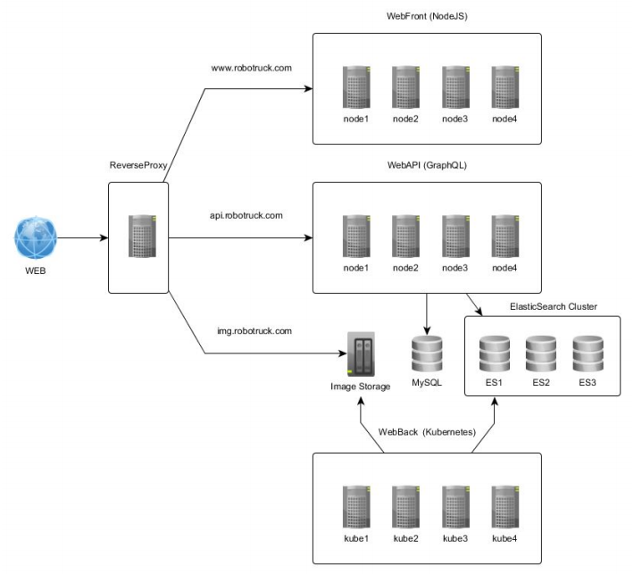
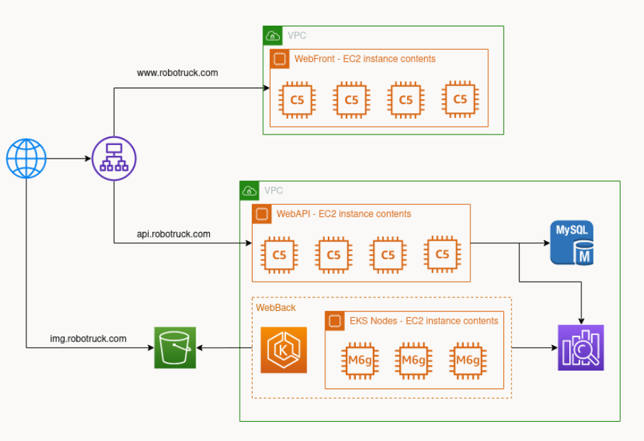

Projet 05 - Concevez et préparez une architecture cloud
Posted on Fri 11 December 2020 in Accueil
Le but de ce projet est de migrer une architecture existante dans le cloud AWS. Ici, le but est vraiment d'étudier les services de base que AWS nous présente et de proposer une méthode de migration dans le cloud. Nous partirons ici sur une migration dite "lift and shift".
Présentation de l'architecture existante
Voici le schéma d'architecture à migrer dans le Cloud :

Avec la plateforme technique suivante :
| Type | OS/Plateforme | Logiciel | Spécifications |
|---|---|---|---|
| WebFront | Linux / Ubuntu 16.04LTS |
NodeJS v8.9.4 ; PM2 2.9.3 | 4C/8T ; 16Go RAM ; 100Go SSD |
| WebAPI | Linux / Ubuntu 16.04LTS |
NodeJS v8.9.4 ; PM2 2.9.3 | 4C/8T ; 8Go RAM ; 100Go SSD |
| ElasticSearch Cluster | Linux / Debian 8 |
Elasticsearch 2.4.4 | 2C/4T ; 14Go RAM ; 1To SSD |
| Kubernetes | Linux / Debian 9 |
Kubernetes 1.8.1 | 4C/8T ; 32Go RAM ; 64To SSD |
Proposition de l'architecture dans AWS
Nous rappelons que le but ici est de partir sur une migration simple avec les services de "base" que AWS peut proposer. Nous ne partirons donc pas dans cette premiere version sur du Route53, CloudFront et ElasticCache.
Voici donc le schéma en mode "lift and shift" tout en profitant des premiers avantages du Cloud AWS avec ses services managés :

Explication (rapide) des différents services de cette architecture
- EC2 : Elastic Compute Cloud. C’est un service de machine virtuelle de base.
- EBS : Elastic Block Store. C’est un type de volume conçu pour offrir des performances élevées avec des temps de réponse rapides.
- RDS : Relational Database Service. C’est un service qui nous permet d’utiliser plusieurs moteurs de base de données telles que MySQL, PostgreSQL, ORACLE, etc.
- S3 : Simple Storage Service. C’ est un service de stockage de données avec versionning, sans limitation de place, etc.
- EKS : Elastic Kubernetes Service. C’est un service entièrement managé qui nous permet d’utiliser Kubernetes sur AWS.
- ElasticSearch Service : C’est un service entièrement managé qui vous permet d’utiliser ElasticSearch directement sans aucune installation.
- VPC : Virtual Private Cloud. Le VPC est un sous-réseau qui vous permet de "regrouper" vos serveurs entre eux, pour qu'ils communiquent plus facilement et en toute sécurité.
Opérations régulières sur ces différents services
- Pour les instances EC2 :
- Installation complète à faire
- Backup à réaliser
- Mise à jour des différents logiciels
* Pour RDS MySQL :
- Pas d’installation MySQL à réaliser
- Mise à jour du logiciel réalisée par AWS
- Sauvegarde automatique tous les jours sur les 7 derniers jours
- Restauration possible à la seconde près
- Pour les services Managé (EKS / ElasticSearch Services) :
- Backup non nécessaire
- Patch de sécurité transparent
Plan de migration proposée (la plus simple)
Nous partons ici sur une migration dites à froid car c'est la plus simple à gérer même si nous aurions pu envisager une méthode de type blue/green
Voici donc les étapes pour réaliser cette migration à froid :
- Création des différentes instances (EC2 / RDS / etc.)
- Copie des données
- Transfert des données
- Test de l’application
- Synchronisation des données quotidiennes jusqu’au jour de la migration
- Jour J :
- Coupure de service de l’ancienne infrastructure
- Dernière synchronisation des données
- Bascule DNS sur les nouvelles Ips
- Tests de l’ensemble des fonctionnalités sur AWS :
- Si OK : Ouverture du service sur AWS pour les clients
- Si KO : Rollback DNS et Réouverture du service sur l’ancienne infrastructure pour les clients